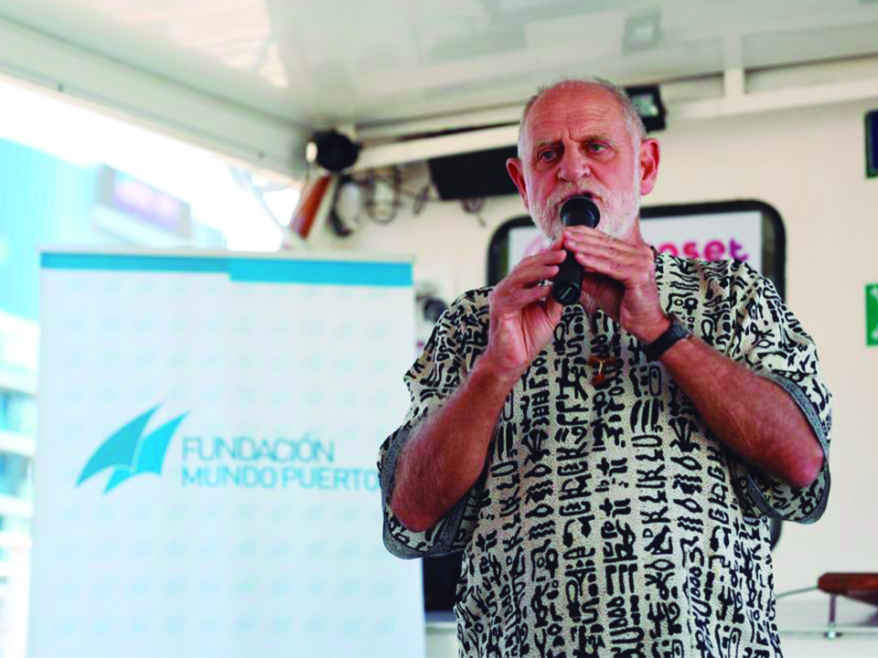
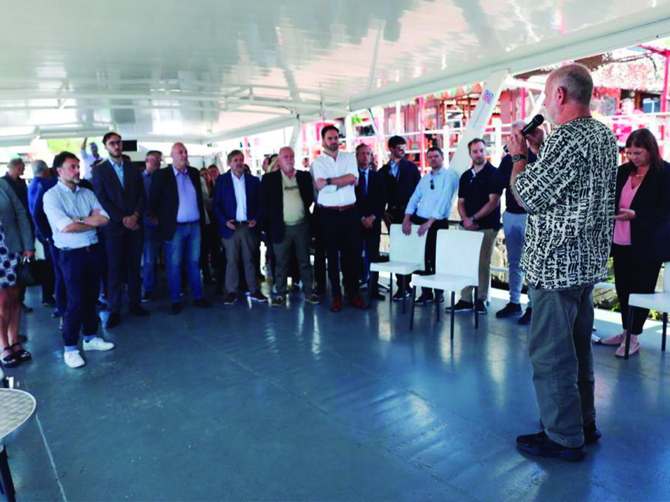
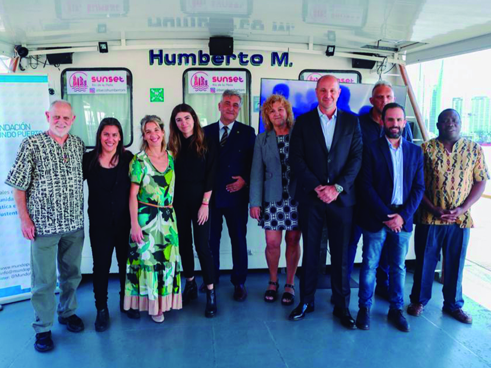

Fray Jorge Bender: “No hay arma más poderosa que la educación”
El padre franciscano Jorge Bender estuvo en Argentina, donde participó de diversas actividades —entre ellas, el lanzamiento de la Fundación Mundo Puerto—, y aprovechó para narrarnos el aporte del programa de desarrollo agrícola y comunitario que realiza en Mozambique, inspirado por el papa Francisco.
En un contacto para Fundación Mundo Puerto, el fray (como se llama a los sacerdotes franciscanos) remarcó la magnitud de la carencia que encontraron en la aldea de Jécua, donde “no hay herramientas de ningún tipo, y el suelo además está gastado porque no conocen la importancia de la rotación de cultivos”. Pese a eso, destaca “la alegría del pueblo” en el continente africano “y su gratitud, dos cosas de las que deberíamos aprender”.
Inspirado en las encíclicas de Francisco —de quien fue alumno—, el padre Jorge señala además la importancia de mantener los sueños y el optimismo, sin dejar de ver la realidad: “no somos ciegos. Sabemos que hay guerra, que hay una crisis global y que el panorama no es alentador. Pero sin optimismo, sin pensar que podemos mejorar aunque sea un poco, la tarea no tiene sentido. Se trata de confiar en que nuestro aporte puede mejorar la situación de al menos unos pocos, pero entender que eso ya significa mucho”.
Durante su presentación en la recientemente lanzada Fundación Mundo Puerto —que se propone aportar al desarrollo del sector portuario y logístico—, Bender remarcó el objetivo de extender su experiencia en otras 74 comunidades de Mozambique.
Al vincular su tarea con la de la fundación, recordó que “Nelson Mandela siempre decía que el arma más poderosa que le podemos dar a la gente es la educación, porque les da alas y también perspectivas; en eso se tiene que enfocar la Fundación Mundo Puerto”.

El lanzamiento estuvo encabezado por Leonardo Salom, presidente de la Fundación, y el vicepresidente Mauricio Lambertucci, presidente de la Comisión de Estudios de Costos del Consejo Profesional de Ciencias Económicas de la Ciudad Autónoma de Buenos Aires.
Mundo Puerto se propone aportar al desarrollo de la logística nacional, para conectar cada punto del país con el puerto como eje, generando nuevas oportunidades para el impulso de las economías regionales.
Para el fray, la comunidad es el concepto más importante que comparten tanto su tarea como la fundación: “Resulta esencial pensar la fundación en plural, como forma de salir del individualismo galopante en que vivimos, que no crea comunidad. Se suele decir que lo que engrandece a alguien engrandece a todos; así como lo que empequeñece a uno se derrama a todos. Ojalá nos contagiemos de este espíritu hermoso de la fundación”.
Remarcando el aporte del sector portuario y logístico y la necesidad de capacitar a los jóvenes y mujeres que se integren a la vida profesional, sostuvo que “queremos educar para que las comunidades puedan tener su propio camino. Es importante involucrar a los jóvenes y sumar a otros para ayudar”.
